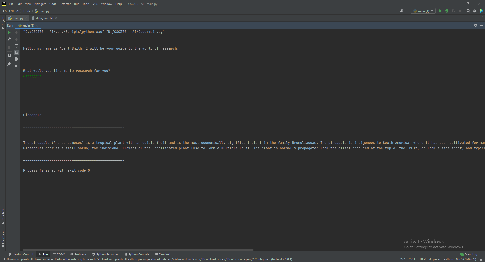

Major Objectives
Advancing Computer Science Objectives
1. Follow a software development process to analyze a problem, and to design, build and test software solutions.
Alexander AI
Chris Tomaskovic
This is my SIP, Alexander AI. I created a flow chart for the project as a whole and then created my part based on the flow chart. I created the AI that does the stock predicting as well as the sentimental analysis of the tweets. I also created a website to display the information.
Website
College Experience Database
Chris Tomaskovic
This is a personal database that I can use to track my college experience. It utilizes a MySQL database and tracks things like friends made, classes taken, and more. I designed an ERD for the database and then created a database based on the ERD.

Relaxation App
Chris Tomaskovic
The problem is that many people are stressed out and need a way to relax. This software tackles the problem by creating a relaxation app that guides the user through breathing exercises with a pleasant background and sounds.
2. Demonstrate software development skills using more than one programming language and development environment.
Python Minesweeper
Chris Tomaskovic
This is a minesweeper game created using Python in PyCharm.
Fantasy eSports March Madness
Chris Tomaskovic and Brendan Carlson
This is a fantasy eSports March Madness bracket created using C++ in Visual Studio 2019.
React Native App
Chris Tomaskovic
This app was created using React Native in Snack.io with Expo.
3. Implement data driven solutions.
Mushroom Identification
Chris Tomaskovic
This is a ML application that identifies mushrooms based off of encoded data. It utilizes data from a csv file. It then gives an accuracy score.
Weather Prediction
Chris Tomaskovic
This is a ML application that predicts the current weather based off of user input. It utilizes data from a csv file and then shows the predicted weather condition.
4. Design and implement software solutions for mobile devices or embedded systems or multiple platforms.
Mobile Space Jam
Chris Tomaskovic
This app was created using React Native in Snack.io with Expo. It is a game where you tilt your phone in the direction you want the comet to move. It can be played on IOS and Android devices.
RFISR
Chris Tomaskovic
This is RFISR aka Roaring Fork Invasive Species Reporter. This is an app I am very passionate about and plan on continuing to improve and hopefully give to the Roaring Fork Conservancy. There are three sections of the app. The first section is where you can go to submit invasive species to Colorado Parks and Wildlife. The second section is a list of invasive species. The thid section is about me and why I created the app.
5. Document the planning and development of software applications using industry-standard tools, techniques and processes.
Alexander AI WireFrame
Chris Tomaskovic
This is a wireframe for the backend of the Alexander AI program as a whole.
ER Diagram
Chris Tomaskovic
This is an ER Diagram for a database that tracks my experiences and time here at UAT. The ER Diagram shows the relationships between the tables and how it would be set up.
6. Within software solutions describe, implement and analyze data structure techniques such as lists, trees, hash tables, graphs, along with sorting and searching algorithms.
Doubly Linked List With Search
Chris Tomaskovic
This is a program that has a doubly linked list with 20 data values. It also has a menu that allows the user to Display the list, Go forward and display the webpage, Go backward and display the webpage, Add another item to the list, Delete an item from the list, Find an item in the list, and Exit.
Graphing Searching Algorithms
Chris Tomaskovic
This showcases two seperate sorting and searching algorithms that are used to find the shortest distance between two points through a network of weighted nodes.
Artificial Intelligence Objectives
1. Develop, analyze and integrate artificial intelligence application and IoT systems.
Tic Tac Toe
Chris Tomaskovic
This is an AI application that plays tic tac toe against you. It utilizes the minimax algorithm to determine the best move and has an easy and hard mode.
AI Research Assistant
Chris Tomaskovic
This is a research assistant that is designed to do research on a subject and then create an essay based off of the information that it finds.

2. Demonstrate skills to design and create natural language processing systems.
Iron Man Chatbot
Chris Tomaskovic
This is an AI Chatbot that is modeled after Iron Man and will respond to your questions in a way Iron Man / Tony Stark would.
Verbal AI Research Assistant
Chris Tomaskovic
This is an AI assistant that will research any topic you give it and then verbally convey a summary of the information it finds.
3. Demonstrate designing and creating machine learning systems using best practices and patterns.
Weather Prediction
Chris Tomaskovic
This is a ML application that predicts the current weather based off of user input. It utilizes data from a csv file and then shows the predicted weather condition.
Fish Market
Chris Tomaskovic
This is a ML application that shows the accuracy score of predicting the fish species based off of the fish's features. It utilizes data from a csv file and then predicts using a K-Nearest Neighbors Algorithm.
4. Demonstrate new and original data in deep learning by consuming big data with original algorithms.
Fire Detection
Chris Tomaskovic and Anthony Shank
This is a fire detection ML and DL application. We did the image classification using Roboflow and utilize the YOLO_v5 model to train and implement.
Deep Learning Gymnasium
Chris Tomaskovic
This is a deep learning application that that plays the OpenAI Gymnasium game Cart Pole. It utilizes a Deep Q-Learning Algorithm to play the game.
5. Demonstrate software development skills using more than one programming language, development environment, platform, and source control system.
Python Minesweeper
Chris Tomaskovic
This is a minesweeper game created using Python in PyCharm.
Fantasy eSports March Madness
Chris Tomaskovic and Brendan Carlson
This is a fantasy eSports March Madness bracket created using C++ in Visual Studio 2019.
React Native App
Chris Tomaskovic
This app was created using React Native in Snack.io with Expo.
6. Describe, develop, analyze, integrate data structures, databases, and database management systems.
College Experience Database
Chris Tomaskovic
This is a personal database that I can use to track my college experience. It utilizes a MySQL database and tracks things like friends made, classes taken, and more.
Trivia Game Database
Chris Tomaskovic
This is a trivia table created in SQL. This is managing all the data for the trivia games with the host, location, players, questions, answers, and much more.